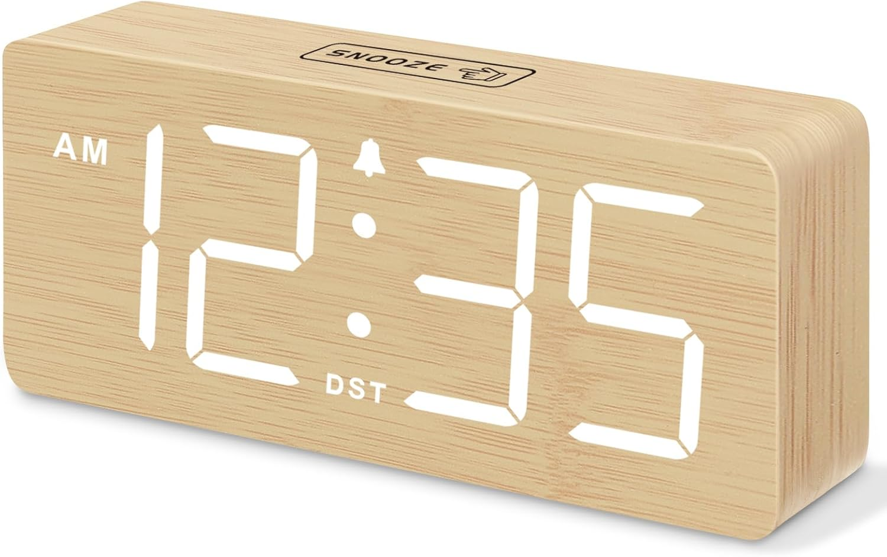

← Back to Shop


Wooden LED Alarm Clock
The alarm clock that actually looks good on your nightstand. This bamboo wood clock has a warm natural grain finish and a large white LED display that's easy to read at a glance. With a snooze button on top, DST support, and a compact rectangular shape, it fits seamlessly into any minimal bedroom or desk setup without looking out of place. A small detail that makes a room feel more intentional.
Shop on Amazon →As an Amazon Associate I earn from qualifying purchases at no extra cost to you.